个人手记
Sky 天
UNSW
Quantum Engineering
& Computer Science
Sky 天
关于我
我在 UNSW 的 builder space 制作了这个个人网站。
目前正在学习 ELEC2134、COMP2521 和 MATH2069。
- 正在学习
- ELEC2134COMP2521MATH2069
- 兴趣
- playing codex
Annie Lester
安妮 · 莱斯特

精巧玩具正在点亮侦探的油灯…
UNSW Quantum Engineering
& Computer Science
UNSW
Quantum Engineering
& Computer Science
我在 UNSW 的 builder space 制作了这个个人网站。
目前正在学习 ELEC2134、COMP2521 和 MATH2069。
双屏已连接
UNSW
playing codex
爱玩 Codex。
Sky 天
横屏浏览，进入完整庄园